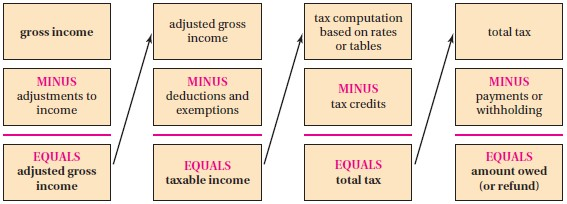

Formulas Used: Mathematics of Finance
NOTE: Unless instructed otherwise;
For all financial calculations, do not round until the final answer.
Do not round intermediate calculations. If it is too long, write it to "at least" $5$ decimal places.
Round your final answer to $2$ decimal places.
Make sure you include your unit.
Solve all questions.
Write the name of any formulas that you use.
Show all work.
Unless stated otherwise, use this Tax Table for all applicable questions:
The Flow Chart shown below shows the basic steps in calculating income tax.
Using the flow chart, explain the basic process of calculating:
(a.) Gross income.
(b.) Adjusted gross income.
(c.) Taxable income.
(d.) Deductions.
(e.) Exemptions.
(f.) Tax
(g.) Income tax
(a.) Gross income is the sum of all income a person receives during the year, including wages, tips, profits from a business, interest or dividends from investments.
(b.) Adjusted gross income is a person's gross income minus any contributions for individual retirement accounts or any other tax-deferred savings plans.
(c.) Taxable income is a person's adjusted gross income minus their exemptions and deductions.
(d.) Deductions are any interest paid on home mortgages, contributions to charity, and taxes paid to other agencies (such as state income taxes or local property taxes) made throughout the year.
(e.) Exemptions are exclusion from tax (exceptions to tax), in part or in whole, of certain income, individuals, and organizations among others.
(f.) A tax is a mandatory payment charged to individuals or organizations by governments to cover the costs of general government functions.
(g.) An income tax is a tax charged on the income of a person or an organization.
The steps to calculate income taxes are:
(1.) Determine the gross income (GI).
(2.) Determine the adjusted gross income (AGI) by subtracting any adjustments to income.
(3.) Determine the taxable income (TI) by subtracting any deductions and exemptions.
(4.) Determine the tax bracket based on the taxable income using the table below (for 2023).

(5.) Calculate the income tax.
Other Definitions
(a.) FICA (Federal Insurance Contributions Act) tax is a tax collected primarily to fund Social Security and Medicare.
All wages, tips, and self-employment business profits are subject to FICA taxes.
(b.) A tax deductible is an amount of money that is subtracted from a person's adjusted gross income.
This reduces the taxable income if itemized deduction is used.
If standard deduction is used, the taxable amount is already reduced.
(c.) A tax deduction is an amount of money that is subtracted from a person's taxable income. It reduces the tax bill.
(d.) A tax credit is an amount of money which gets subtracted from a person's tax bill.
NOTE: Unless instructed otherwise;
For all financial calculations, do not round until the final answer.
Do not round intermediate calculations. If it is too long, write it to "at least" $5$ decimal places.
Round your final answer to $2$ decimal places.
Make sure you include your unit.
Solve all questions.
Write the name of any formulas that you use.
Show all work.
Unless stated otherwise, use this Tax Table for all applicable questions:
| Tax Rate | Single | Married Filing Jointly | Married Filing Separately | Head of Household |
|---|---|---|---|---|
| 10% | up to $9950 | up to $19,900 | up to $9950 | up to $14,200 |
| 12% | up to $40,525 | up to $81,050 | up to $40,525 | up to $54,200 |
| 22% | up to $86,375 | up to $172,750 | up to $86,375 | up to $86,350 |
| 24% | up to $164,925 | up to $329,850 | up to $164,925 | up to $164,900 |
| 32% | up to $209,425 | up to $418,850 | up to $209,425 | up to $209,400 |
| 35% | up to $523,600 | up to $628,300 | up to $314,150 | up to $523,600 |
| 37% | above $523,600 | above $628,300 | above $314,150 | above $523,600 |
| Standard Deduction | $12,550 | $25,100 | $12,550 | $18,800 |
|
FICA Taxes The FICA tax rates are as follows: 7.65% on the first $142,800 of income from wages. 1.45% on any income from wages in excess of $142,800 |
||||
|
Taxes on Dividends and Long-Term Capital Gains 0% on income less than $40,000 for single taxpayers or $80,000 for married couples filing jointly. 15% on additional income up to $441,500 for single taxpayers or $496,600 for married couples filing jointly. 20% on income above $441,500 for single taxpayers or $496,600 for married couples filing jointly. |
||||
The Flow Chart shown below shows the basic steps in calculating income tax.
Using the flow chart, explain the basic process of calculating:
(a.) Gross income.
(b.) Adjusted gross income.
(c.) Taxable income.
(d.) Deductions.
(e.) Exemptions.
(f.) Tax
(g.) Income tax

(a.) Gross income is the sum of all income a person receives during the year, including wages, tips, profits from a business, interest or dividends from investments.
(b.) Adjusted gross income is a person's gross income minus any contributions for individual retirement accounts or any other tax-deferred savings plans.
(c.) Taxable income is a person's adjusted gross income minus their exemptions and deductions.
(d.) Deductions are any interest paid on home mortgages, contributions to charity, and taxes paid to other agencies (such as state income taxes or local property taxes) made throughout the year.
(e.) Exemptions are exclusion from tax (exceptions to tax), in part or in whole, of certain income, individuals, and organizations among others.
(f.) A tax is a mandatory payment charged to individuals or organizations by governments to cover the costs of general government functions.
(g.) An income tax is a tax charged on the income of a person or an organization.
The steps to calculate income taxes are:
(1.) Determine the gross income (GI).
(2.) Determine the adjusted gross income (AGI) by subtracting any adjustments to income.
(3.) Determine the taxable income (TI) by subtracting any deductions and exemptions.
(4.) Determine the tax bracket based on the taxable income using the table below (for 2023).
(5.) Calculate the income tax.
Other Definitions
(a.) FICA (Federal Insurance Contributions Act) tax is a tax collected primarily to fund Social Security and Medicare.
All wages, tips, and self-employment business profits are subject to FICA taxes.
(b.) A tax deductible is an amount of money that is subtracted from a person's adjusted gross income.
This reduces the taxable income if itemized deduction is used.
If standard deduction is used, the taxable amount is already reduced.
(c.) A tax deduction is an amount of money that is subtracted from a person's taxable income. It reduces the tax bill.
(d.) A tax credit is an amount of money which gets subtracted from a person's tax bill.